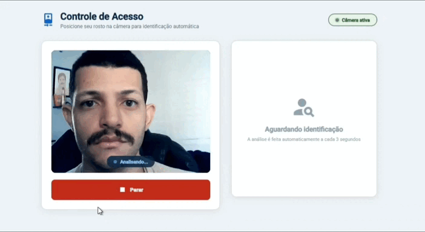
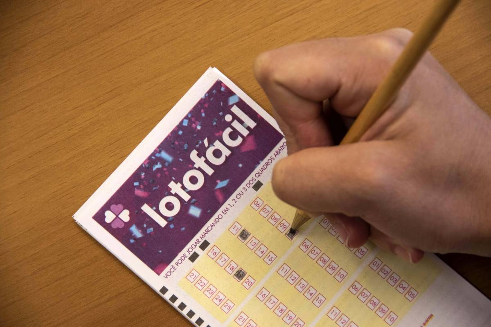
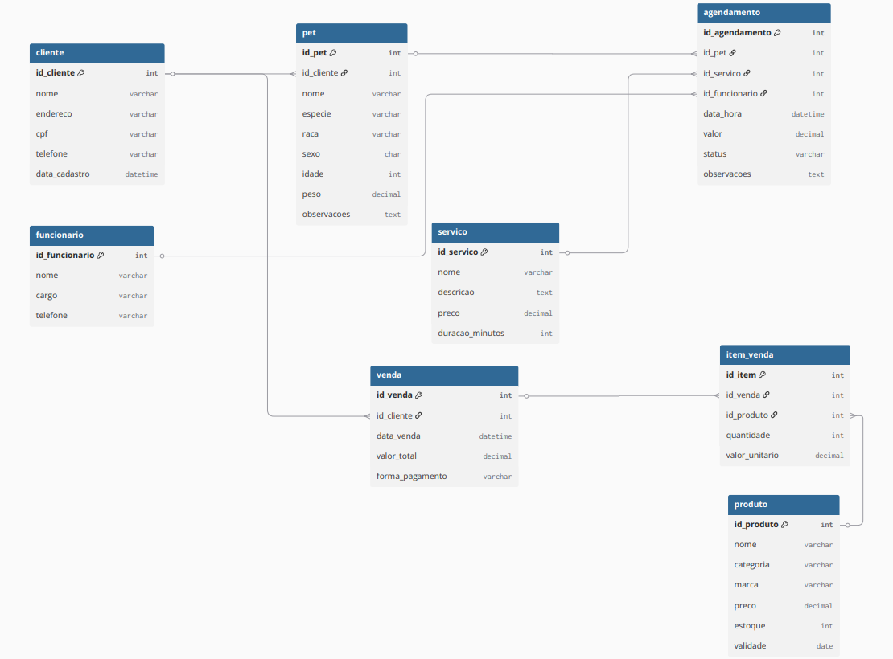

Na Régua nasceu de um sonho simples e honesto: o de empreender. Este é o meu primeiro SaaS — um projeto construído linha por linha com a crença de que tecnologia pode transformar a vida de pequenos empreendedores. A ideia surgiu da vontade de criar algo real, algo que resolva um problema verdadeiro e gere valor para quem trabalha duro todos os dias. Na Régua é uma plataforma de gestão para profissionais autônomos e pequenos negócios — com controle de agendamentos, serviços e financeiro em um só lugar. Cada funcionalidade entregue é uma vitória. Cada bug resolvido é uma lição. Esse é só o começo.

Outro dia fui a um hospital com minha esposa e precisei passar por um totem para realizar meu cadastro para liberar acesso. A tela pedia que eu digitasse meu nome e confirmasse. Simples. Mas quando terminei de digitar, o botão "Confirmar" continuava com aquela cor verde opaca — do mesmo jeito de quando estava desabilitado. Não tinha nenhum feedback visual de que o sistema tinha reconhecido meu nome. Parecia trancado. Parecia quebrado. Mas funcionava. Aquilo ficou na minha cabeça. Uma coisa tão pequena — a cor de um botão — mas que gera uma dúvida real no usuário: Devo apertar o Confirmar ou não? Foi esse incômodo que me motivou a criar o Tá Liberado: um sistema de controle de acesso por reconhecimento facial, feito do zero para entender como essa tecnologia funciona por dentro.

⚠ Sabia que a probabilidade de acertar os 15 números da Lotofácil é de 1 em 3.268.760? Apesar de parecer enorme, ela é uma das loterias com maior chance de premiação do Brasil — e ainda paga prêmio para acertos menores! Aqui você sorteia suas combinações na hora, sem precisar esperar ninguém.

Modelagem de um banco de dados relacional para um sistema de Pet Shop, aplicando conceitos de Modelagem Entidade-Relacionamento (MER), normalização e definição de relacionamentos entre entidades. O projeto contempla cadastro de clientes e seus pets, agendamento de atendimentos, controle de funcionários e serviços, além de um módulo de vendas e produtos — com definição de chaves primárias, estrangeiras e cardinalidades. Durante o desenvolvimento, foram trabalhados conceitos como relacionamentos 1:N, integridade referencial e estruturação de um banco de dados escalável e organizado — a base para sistemas mais eficientes, consistentes e fáceis de manter.